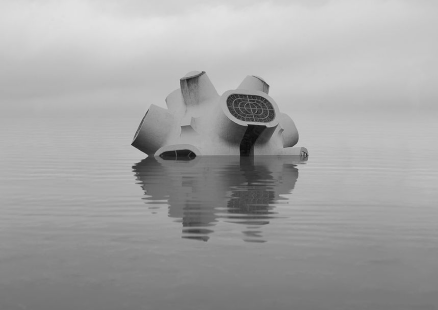
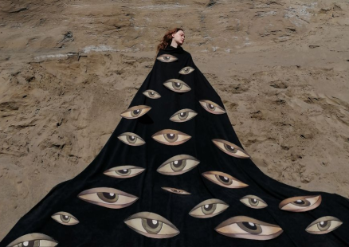
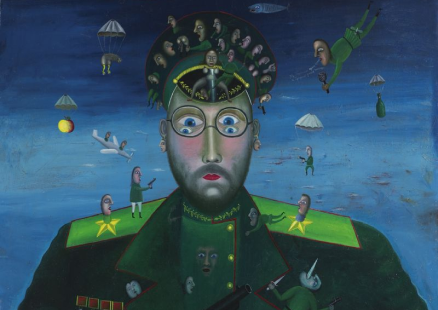
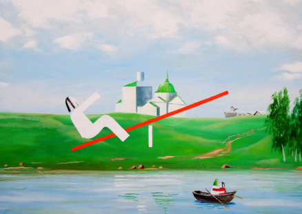
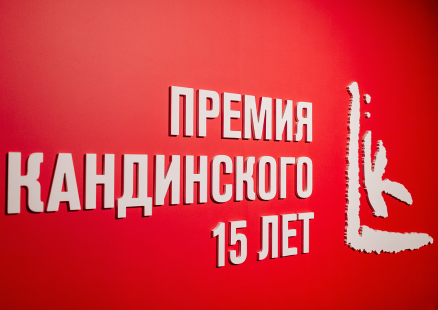

Актуальные события

«Осколки» выставка Данилы Ткаченко
11 февраля – 4 сентября
Галерея Люмьер

Выставка «Апофения»
11 февраля – 4 сентября
Галерея-мастерская «ГРАУНД Солянка»

Выставка «Лики / Лица / Морды»
11 февраля – 4 сентября
Мраморный дворец Русского музея

Игорь Новиков. «Русские качели»
11 февраля – 4 сентября
Галерея Коллекционного Искусства DiDi

Выставка «Премия Кандинского. 15 лет»
11 февраля – 4 сентября
Волго-Вятский филиал ГЦСИ
«Осколки» выставка Данилы Ткаченко
11 февраля – 4 сентября
Галерея Современного Искусства
Последнее в блоге
Читать всеАлександр Буренков о проекте «Сырое и приготовленное»
«Мы придали новый импульс классической музейной экспозиции» До 17 января в Российском этнографическом музее можно увидеть выставку»
14 января 2022
Работы Браткова, Кизиловой и Перкина в Апатитах
Центра современного искусства «Сияние» – проекты с участием художников Сергея Браткова, Анастасии Кизиловой и Вовы Перкина. «Улыбающийся апатит»
28 декабря 2021
Выставка «Vivat Natura» художника Георгия Булдакова
22 октября 2021 г. в 18-00 в «Галерее Прогресса» состоится открытие выставки «Vivat Natura» художника Георгия Булдакова. «Vivat Natura» – это выставка манифест...
22 октября 2021